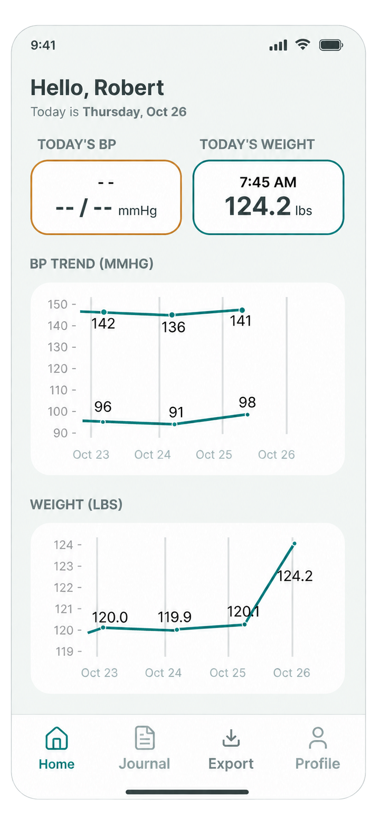
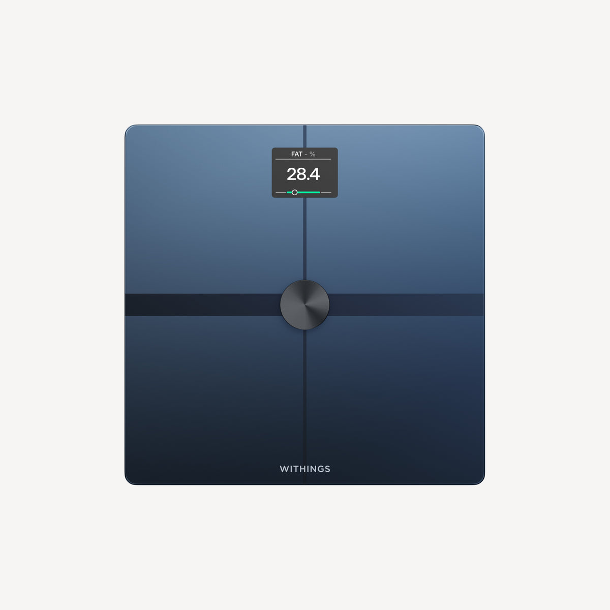
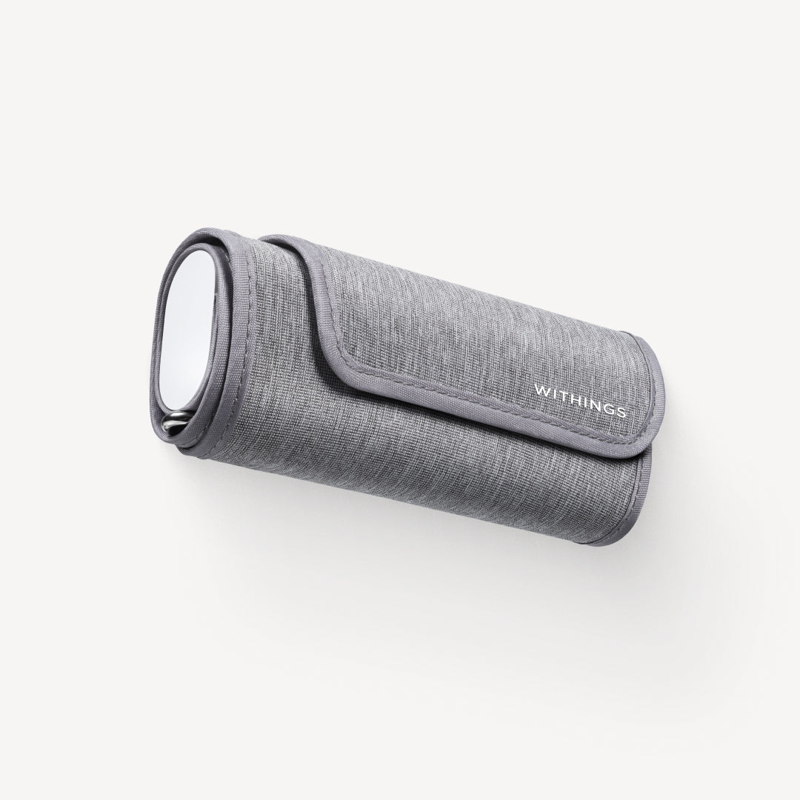

62,546
U.S. deaths with congestive heart failure coded as the underlying cause in 2023.
ICD-10 I50.0; excludes deaths recorded under other heart-failure codes.
NoCHF is an app that aims to reduce avoidable hospitalizations and emergency room visits for people living with congestive heart failure by making it easier to track daily measurements by:
This site outlines the purpose and development of the NoCHF app, a student capstone project to meet partial fulfillment of the requirements for a Master of Liberal Arts degree from Harvard University Extension School
Understanding CHF
Congestive heart failure (CHF) is heart failure accompanied by fluid buildup, often in the lungs, legs, ankles, or other tissues. Two common forms are HFrEF, in which the heart pumps weakly, and HFpEF, in which the heart is too stiff to fill properly.12
In the United States, an estimated nearly 7 million adults were living with heart failure based on 2017–2020 data,3 CHF was recorded as the underlying cause of over 60,000 deaths in 2023,4 and hospital admissions with CHF as the principal diagnosis accounted for an estimated $14.5 billion in U.S. hospital costs in 2018.5
U.S. adults living with heart failure
62,546
U.S. deaths with congestive heart failure coded as the underlying cause in 2023.
ICD-10 I50.0; excludes deaths recorded under other heart-failure codes.
$14.5 billion
Estimated U.S. hospital costs for admissions with CHF as the principal diagnosis in 2018.
Hospital costs only; excludes outpatient care and indirect costs. The study defined CHF using a broad set of heart-failure diagnosis codes.
Daily Measurements
For people with CHF, daily weight checks can reveal fluid buildup. This extra fluid collects in the lungs, legs, or abdomen and may signal worsening heart failure.67
Blood pressure is another important signal in CHF: high pressure increases the resistance the heart must pump against, adding to its workload.8 Low pressure can also accompany heart failure or result from heart-failure medicines.910
Early intervention starts with reporting sudden weight gain or blood-pressure changes outside the care team’s agreed range, so the team can adjust treatment promptly.611 In particular, responding to fluid-related weight gain—even before the person feels unwell—may help avoid hospitalization for worsening heart failure.12
For many people living with CHF, daily measurements become part of a routine, but others find them difficult to sustain. In one heart-failure study, patients completed all daily readings on about 74% of days,13 while a separate study of connected blood-pressure monitor users—not specifically people with CHF—found that only 54% continued using their device around a year later, and 44% of those continuing took only occasional measurements.14
We believe a simple, easy-to-use app, combined with support and accountability from a caregiver, can help people take measurements more consistently.
74%of days, on average
Patients completed the full set of weight, blood pressure, heart-rate, and symptom readings on approximately 74% of days in a heart-failure monitoring study.
22,177 adults using connected blood pressure monitors.
54%continued using their device around one year later.
44%of those continuing took only occasional, scattered measurements.
Not a CHF-specific study. Continued use does not mean daily adherence.
The audience
A persona is a fictional representation of a target user that helps guide design decisions. Below are two personas that help us design NoCHF around the needs of a person living independently with CHF and a family caregiver supporting their daily self-care from a distance.
Figure 2. Persona 1. Image was generated by ChatGPT
80, Female, Retired Elementary School Teacher
Motto: “Life is better when shared with family and friends.”
Mary is a retired teacher who lives alone in her own home. She was diagnosed with congestive heart failure (CHF) four years ago and manages her condition with daily medication as well as recording her weight and eating habits in her CHF journal. Mary values her independence and wants to remain in her own home, but living at home independently has become more challenging and she quickly admits that her memory is not what it used to be.
What her family says: “Mary wants to stay independent, but we're growing anxious about her ability to keep up with her self-care. We live a state away and aren't sure how to talk with her about when she might need help at home or how we could afford it.”
What her neighbour says: “Mary is always friendly and enjoys taking care of her garden. She likes doing things on her own and rarely asks anyone for help.”
Figure 3. Persona 2. Image was generated by ChatGPT
48, Female, Program Manager
Motto: “Family means showing up when you're needed.”
Emily is a Program Manager who is always trying to stay one step ahead in her busy life. She lives with her husband and teenage son and values spending time with her family. The family moved again for her and her husband’s new jobs and now lives in a city without family nearby, where they are excited to make new friends.
Over the past few years, she has gradually taken on more responsibility for helping her elderly mother manage her congestive heart failure. While her mother lives independently, Emily is becoming anxious and uncertain about whether her mother is taking adequate care of herself.
What her mother says: “Emily never makes me feel like I'm a burden. But she's a little too much like I was at her age—always racing around.”
What her sister says: “Emily is the person everyone relies on. She somehow manages to take care of everyone, and I can always call her and speak openly and honestly.”
The approach
Make daily measurements easy to understand and keep up with.

The Devices
NoCHF is designed to grow with additional device integrations. Withings is the initial integration for weight and blood-pressure measurements. Devices are set up through the Withings app; with the user’s permission, NoCHF’s backend retrieves readings from their Withings account.
Both devices support Wi-Fi, allowing readings to sync after a measurement. Once a user connects their Withings account, NoCHF can subscribe to measurement updates and retrieve new readings automatically for display in the app. Withings typically delivers update notifications within two minutes of receiving the data; device syncing and app refresh can add time. How automatic updates work

Connected scale
Records weight. Withings specifies weight precision of 50 g (about 0.1 lb).
References: Weight precision specification · Product details

Upper-arm blood-pressure cuff
Measures systolic and diastolic blood pressure and heart rate. Withings specifies pressure-sensor accuracy of ±3 mmHg or 2% of the reading and pulse accuracy of ±5%. Blood-pressure measurement performance is also clinically validated.
References: Accuracy specifications · Product details
Withings integration documentation · Product photos: © Withings, from the linked product pages.
The feedback
The takeaways
The paper will be provided at the end of the project.
The people
Who we are and what each person brings to the project.
Introduce team members with names, roles, and photos.